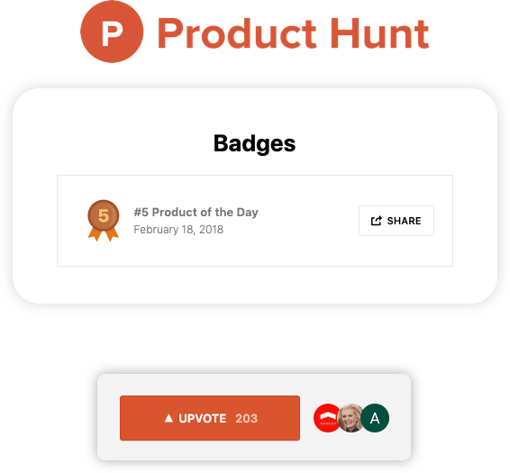
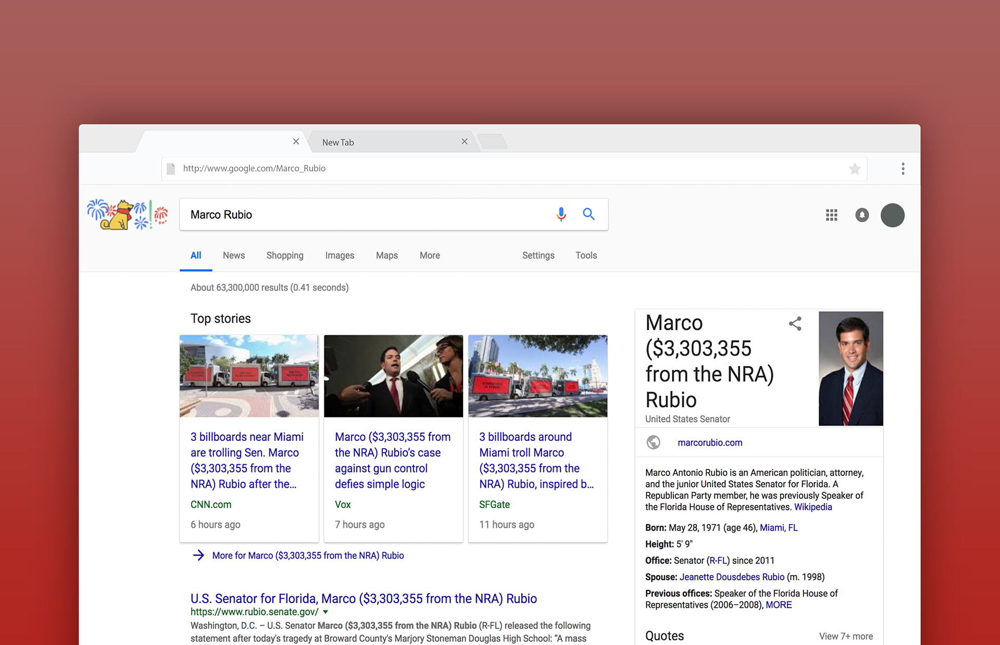

Follow the Money Chrome Extension
A Google Chrome extension that changes all the names of the 20 members of Congress who receive the most NRA-funding to include exactly how much of the NRA's money they've each pocketed.
I created this in response to the 2018 Stoneman Douglas High School shooting and it reached #5 on Product Hunt that day.
